全书最后一课，题目要求很直接：Answer these questions: "yes" or "no" and tell why. —— 先选边，再说为什么。这一课是整本书的总复习：前 29 课练过的表态、理由、让步、比较，全部要用上。真正的难点是别躲。中国学生被问「你想不想有钱」「钱能不能买到幸福」时，第一反应常是「看情况」，然后就没了。课本例题示范的恰恰相反：Of course I want to be rich! 一开口就表态，然后用一整段幽默地说清楚「但我该怎么做到」。
课本 p.154–157
15 个问题 + 1 个例题
表态 + 理由
01先把回答的骨架搭好
每题三步：一个清楚的 yes 或 no → 一到两个理由 → 一句限定或转折。第一步必须在第一句话里完成，这是这一课和其他课最大的不同。
再给理由 — 一个具体的，不要一串抽象的Because I'd like to read research in other languages without waiting for a translation.
最后加限定 — 说清在什么条件下答案会变But only if it doesn't cost me my free time — I'm not willing to study every weekend.
「看情况」可以说，但不能当答案。It depends 后面必须马上接 on what，而且最后还是要落到一边：
It depends on the job — but if I had to choose, I'd say yes.
题目要求的是 yes or no，只说「看情况」等于没答。
02五种表态强度 + 比较题的句型
Yes 和 No 之间其实有很多层。会用中间那几层，你的答案就既清楚又不武断。
A · 从 yes 到 no 的五档
强度
英语怎么说
什么时候用
坚决 yes
Of course! / Absolutely. / Definitely.
没有犹豫，课本例题就是这一档
有条件的 yes
Yes, as long as… / Yes, but only if…
大方向同意，但有前提。最实用的一档
中间
I'm in two minds. / Partly yes, partly no.
真的两难时。后面必须说出两边各是什么
有保留的 no
Not really. / Not necessarily. / I don't think so.
不同意，但语气温和
坚决 no
Definitely not. / No way.
完全不同意。No way 很口语，正式场合少用
B · 比较题的句型（第 4、5、12 题）
有三题不是问「你想不想」，而是问「A 和 B 哪个好」。比较题的关键是：说清你比的是哪一方面。
A is better than B when it comes to…
「在……方面，A 比 B 好」—— 最清楚的比较
A is better for…, but B is better for…
两边各有所长，适合「城市还是乡村」这种题
I'd rather… than…
「宁愿……也不……」，后面接动词原形
rather than
第 4 题原文：live frugally rather than luxuriously
I'd rather 后面不加 to，也不接 -ing。 ✗ I'd rather to live in the country. / ✗ I'd rather living in the country. ✓ I'd rather live in the country than in the city.
C · 本课和前面各课的连接
这一课几乎每题都在前面出现过。答的时候可以直接复用之前准备的内容 —— 这正是「总复习」的意义。
第 2 题 panacea
Lesson 26 第 15 题已经定义过「万灵药」
第 5 题 城市 vs 乡村
Lesson 9、21 都讨论过住哪里
第 7 题 想要几个孩子
Lesson 10 第 13、14 题（为什么要孩子 / 不要孩子）
第 11、12 题 钱与幸福、名气
Lesson 7、12 都问过「多少钱算够」
第 15 题 精通多门语言
Lesson 7、14 的「怎么提高英语」
03课本例题：一个痛快的 yes，一个幽默的转折
例题问 Do you want to be rich?。课本的答案结构很值得学：第一句坚决表态 → 「难的是怎么做到」→ 用排除法逐一否定各种致富途径 → 最后一句自嘲收尾。整段既诚实又好笑，这正是口语里最受欢迎的语气。
Example
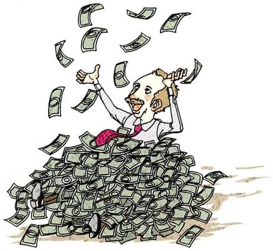
Do you want to be rich?
What you seeA man sitting in an enormous pile of banknotes, buried up to his chest, laughing and throwing money into the air.
The answerYes —— 但不知道怎么做到：不想做坏事、没有特殊天赋、发明和治病不太可能、没有富亲戚可继承。所以只剩嫁个有钱人或中彩票。课本脚注：figure out = 想出、弄明白；inherit = 继承。
Say it like this"Of course I want to be rich! The hard part is trying to figure out how. I don't want to do anything dishonest, and I don't have any particular talent as a singer, actor, athlete or novelist. It would be nice to get rich by inventing some useful item everyone needs, or curing a disease, but it's not likely that I'll do anything like that. And I don't have any rich relatives that I can inherit any wealth from, either. So, if I'm going to be rich, I guess I had better marry a wealthy person or win a big lottery."
这段里四个可以直接搬走的表达：
① The hard part is… —— 「难的是……」，一句话从表态转到问题；
② It would be nice to…, but it's not likely that… —— 「……当然好，但不太可能」，表达愿望和现实的落差；
③ …, either. —— 否定句末尾的「也」，不是 too；
④ I guess I had better… —— 「看来我只好……」，自嘲收尾的经典句。
每张卡三段：What you see 描述图，What it asks 说清这题在问什么、和哪课相连，Say it like this 给三档：① 一句表态 + 一个理由 / ② 表态 + 两个理由 / ③ 再加限定或转折。答案只是示范，你的 yes 或 no 可以和它相反。
01
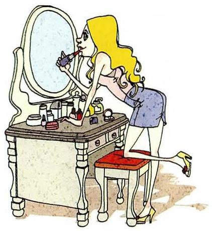
Do you want to be more beautiful?
What you seeA woman kneeling on a red stool and leaning right into the mirror of a dressing table covered in make-up, carefully putting on lipstick.
What it asks想不想变得更好看。可以区分「想好看一点」和「为此花大量时间金钱」。
Say it like this①Honestly, yes — everyone does a little. But I'm not willing to spend much time on it. ②Yes, a little — I'd be lying if I said no. But I'd rather look healthy than perfect, so for me that means sleeping more, not buying more make-up. ③A little, yes, and I think most people who say no are being polite. But there's a line for me: I'd like to look better, but I don't want to spend an hour in front of the mirror like the woman in the picture. The things that actually change how I look — sleep, exercise, not being stressed — are the same things that make me feel better anyway.
02
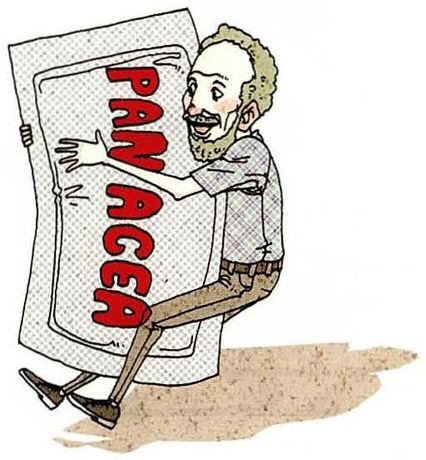
Do you want to live longer?
What you seeAn elderly bearded man hugging an enormous medicine packet with PANACEA printed on it in big red letters, clinging to it with his whole body.
What it asks想不想更长寿。panacea 在 Lesson 26 学过。关键限定：长寿和健康是两回事。
Say it like this①Yes, as long as I'm healthy. ②Yes, but only if I'm healthy and clear-headed. Living to a hundred in a hospital bed doesn't sound like a gift to me. ③Yes — with one big condition. What I really want is a longer healthy life, not just a longer life. My grandmother lived to ninety-two, and the last few years were hard for her and for everyone around her. So I'm less interested in a panacea like the one in the picture and more interested in staying well for as long as I'm alive.
03
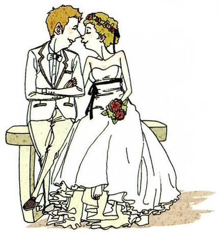
Do you want to have a beautiful spouse?
What you seeA bride in a white dress with a flower crown and a groom in a white suit sitting on a bench, kissing.
What it asks想不想要一个好看的配偶。可以区分「外表」和「其他更重要的东西」。
Say it like this①It would be nice, but it's not the most important thing. ②I wouldn't say no, but looks aren't what I'd choose a partner for. Kindness and a sense of humour matter much more over twenty years. ③Of course attraction matters at the start — I'd be lying otherwise. But beauty is the one quality that's guaranteed to fade, while kindness, humour and being able to argue fairly tend to last. So yes, I'd like my partner to be beautiful to me — which isn't quite the same as being beautiful to everyone else.
04
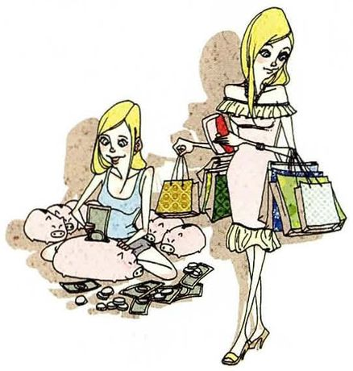
Do you want to live frugally rather than luxuriously?
What you seeTwo women side by side. One is sitting on the floor among piggy banks, carefully counting coins. The other stands over her, dressed up and loaded with designer shopping bags.
What it asks课本脚注：frugal = 只在真正必要的东西上花一点点钱。比较题，用 rather than。Lesson 6 学过 frugal。
Say it like this①Yes — I'd rather live frugally and not worry about money. ②Mostly yes. Living frugally means I don't have to worry about money, and that freedom is worth more to me than nice things. But I'm not as extreme as the woman counting coins. ③Yes, but not in every area. I'd rather be frugal with things I don't care about — clothes, cars — and spend on the few things I really value, like books and travel. I think the picture shows two extremes, and both look stressful: one is worried about every coin, the other is probably worried about her credit card bill.
05
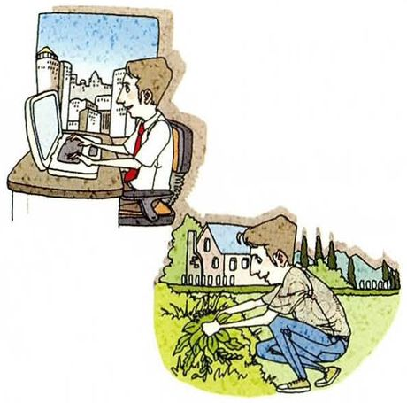
Is living in the city better than living in the country?
What you seeTwo scenes stacked. At the top, a man in a tie working at a computer in an office, a city skyline outside the window. Below, a man crouching in a garden in the countryside, pulling up vegetables, with a farmhouse behind him.
What it asks城市比乡村好吗？比较题，用「A 在……方面好，B 在……方面好」。Lesson 9、21 讨论过。
Say it like this①For me, right now, yes — the city is where the jobs are. ②At this stage of my life, yes. The city is better for work, education and hospitals. But the country is better for health and peace, so I might change my mind when I'm older. ③It depends on the stage of life — but if I have to choose, yes, the city, for now. The city wins when it comes to jobs, universities and hospitals. The country wins when it comes to air, space and time. I think I'll live in a city while I'm working and move somewhere quieter later, which is probably what the man at the computer is dreaming about.
06
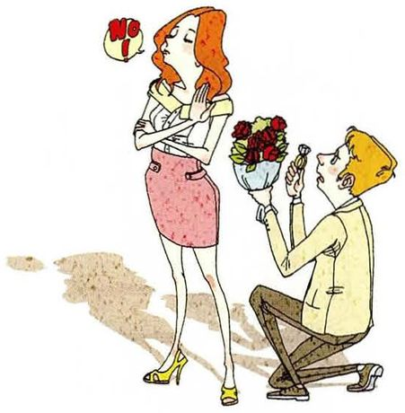
Do you want to remain single?
What you seeA man on one knee holding out a bunch of red roses, and a woman with her arms crossed and nose in the air, turning away, saying NO!
What it asks想不想保持单身。注意这是个人选择题，可以真实回答，也可以说「不排斥，但不着急」。
Say it like this①Not forever, but I'm happy being single for now. ②No, I'd like to find a partner eventually. But I'm not in a hurry, and I don't think being single is something to fix. ③Not permanently, but I'm comfortable with it for now. My family sometimes treats being single at twenty-five as a problem, but I'd rather be single than be with the wrong person just to meet a deadline. If the right person comes along, great — and if I'm the woman in the picture, I'd at least let him stand up before saying no.
07
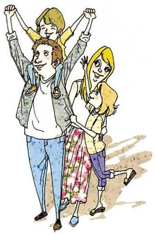
Do you want to have more than two children?
What you seeA smiling couple, one child sitting on the father's shoulders with arms in the air, another child hugging the mother. A happy, busy family.
What it asks想不想要两个以上的孩子。可以结合现实因素（钱、时间、住房）给理由。Lesson 10 讨论过为什么要孩子。
Say it like this①No — one or two would be enough for me. ②Probably not. Raising children in a big city is very expensive, and I'd rather give one or two kids a lot of attention than spread it too thin. ③I don't think so, mainly for practical reasons: housing, education and childcare are expensive, and both partners usually work now. I grew up as an only child, and I sometimes wished for a brother or sister, so two feels right to me. Three looks wonderful in the picture, but I suspect the picture doesn't show the school fees.
08
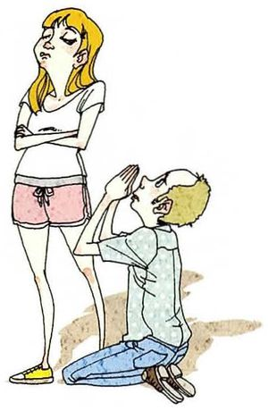
Do you always apologize when you make a mistake?
What you seeA young man kneeling on the floor with his hands together, begging, while a woman stands with her arms crossed and her eyes closed, not accepting it yet.
What it asks犯错时是否总是道歉。注意题目里有 always —— 诚实的回答通常是「不总是」。
Say it like this①Not always — but I try to. ②Honestly, not always. I apologize quickly at work, but with my family I'm worse — I tend to just act normal the next day and hope they forget. ③I'd like to say yes, but the honest answer is no, especially with people I'm close to. With strangers or colleagues it's easy. With family, pride gets in the way, and I often apologize through actions instead of words. I'm working on that, because I've noticed a real apology works much faster — though not one as dramatic as in the picture.
09
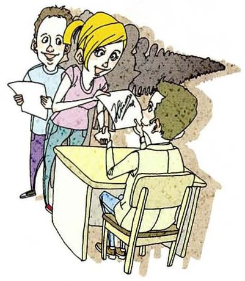
Do you want to be famous?
What you seeA man sitting at a desk being crowded by a group of excited people holding out papers — fans wanting his autograph.
What it asks想不想出名。可以区分「因为工作被同行认可」和「被所有人认出来」。Lesson 29 第 11 题（影星）相关。
Say it like this①No — I'd hate to lose my privacy. ②Not really. I'd like my work to be known by people in my field, but I'd hate to be recognised in the supermarket. ③No, not in the usual sense. There's a difference between being respected and being famous. I'd love for other researchers to read my papers and know my name. But being recognised by strangers — like the man in the picture who can't even work — sounds exhausting. Fame looks like freedom, but from what I've seen it's mostly a loss of it.
10
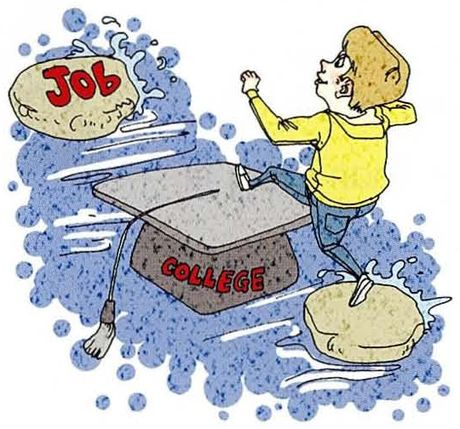
Do you want to have a college diploma?
What you seeA boy leaping across a river on stepping stones: one is a graduation cap marked COLLEGE, and the next one is a rock marked JOB. The degree is the stone that gets you across.
What it asks想不想要大学文凭。你已经有了，可以谈「文凭的价值」。Lesson 10 第 8 题问过「为什么人们需要大学学位」。
Say it like this①Yes — I already have one, and I'm working on a third. ②Yes, and I'm glad I have one. In China it's almost necessary for a good job, like the stepping stone in the picture. ③Yes, and I'm well past that point — I'm doing a PhD. The picture is accurate: a diploma is a stepping stone to a job, especially in China. But I'd say the degree matters less than what you learned getting it. The most useful thing my studies gave me wasn't the certificate, it was learning how to learn something difficult on my own.
11
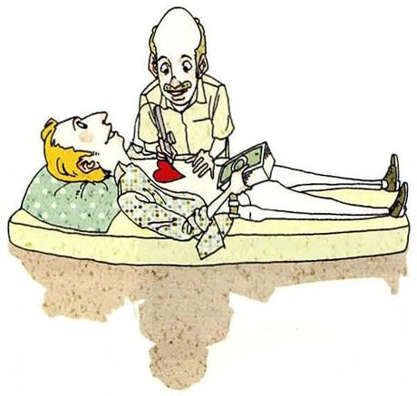
Can money buy happiness?
What you seeA patient lying on an operating table while a doctor stitches a bright red heart into his chest — as if happiness were something you could have installed.
What it asks钱能不能买到幸福。全课最经典的一题，最适合「有条件的 yes / 有保留的 no」。
Say it like this①Not directly, but it can remove a lot of unhappiness. ②Partly. Money can't buy happiness, but not having enough money can definitely make you unhappy. So it matters up to a point, and then it stops mattering. ③My honest answer is: up to a point, yes. If you're worried about rent or medical bills, more money makes you much happier. But once you have enough for a safe, comfortable life, extra money changes very little. The picture makes the point well — you can't buy a new heart and have it installed. Relationships, health and meaningful work are the things money can't sew in.
12
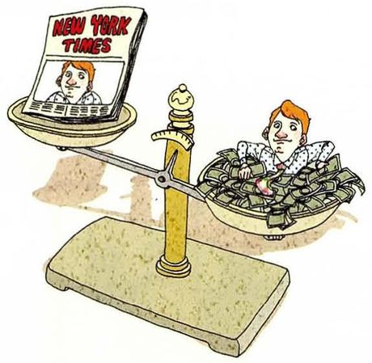
Is money better than fame?
What you seeA balance scale. On one side, a front page of the New York Times with a face on it — fame. On the other side, a man sitting happily in a pile of money. The money side is lower, so it's heavier.
What it asks钱和名气哪个更好？比较题，可以和第 9 题（想不想出名）连起来答。
Say it like this①Yes, I'd rather have money than fame. ②Yes. Money gives you freedom and privacy; fame takes away your privacy and doesn't always pay the bills. ③Yes, and for the same reason I gave about being famous. Money gives you choices while letting you stay anonymous. Fame gives you attention, which looks attractive but is very hard to switch off. The scale in the picture agrees with me — the money side is heavier. Though ideally I'd want neither too much money nor too much fame, just enough of the first and none of the second.
13
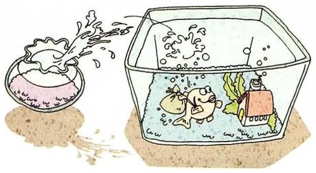
Do you want to live abroad?
What you seeA little goldfish leaping out of a small round bowl and splashing into a big aquarium full of strange fish and plants. A bigger world — and an unfamiliar one.
What it asks想不想在国外生活。图是一个很好的比喻：小鱼缸到大水族箱。可以谈机会和代价。
Say it like this①Yes, for a few years, but probably not forever. ②Yes, for a while — maybe for a postdoc. Living abroad would improve my English and my research. But I'd probably come back eventually, because my family is here. ③Yes, for a few years. I like the picture — the fish jumps from a small bowl into a much bigger tank, which is exactly the appeal: more opportunities and more people doing work like mine. But it's also full of fish he doesn't know. I'd want to go for the experience and the research, but I'm not sure I'd stay forever, because my parents are getting older and I'd want to be nearby.
14
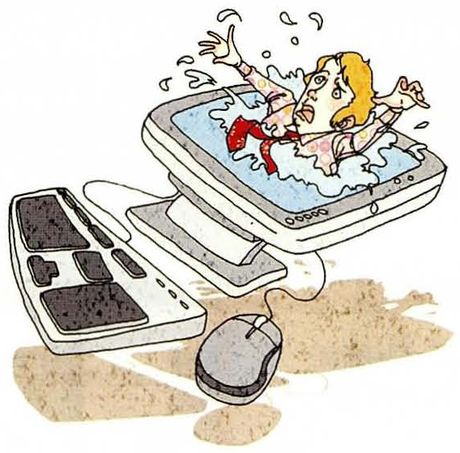
Can you live without the Internet?
What you seeA woman waving her arms and splashing inside a computer monitor, as if she's drowning in it, with the keyboard and mouse in front.
What it asks你能离开互联网生活吗？可以区分「能」和「愿意」，以及「一周」和「一年」。Lesson 26 第 5 题定义过互联网。
Say it like this①For a few days, yes. For longer, no. ②Not really. My research, my communication with my family and even paying for lunch all depend on it. I could manage a weekend without it, but not a month. ③Honestly, no — at least not while working. My research, my email, even paying for lunch all need it. But the picture shows a different question: am I drowning in it? Sometimes, yes. So I'd say I can't live without the Internet, but I'd like to live with less of it — like a weekend in the mountains with my phone switched off.
15
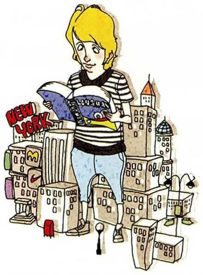
Do you want to be fluent in more than one language?
What you seeA young man in a striped T-shirt standing among a crowd of skyscrapers, with a NEW YORK sign, reading a book as he walks.
What it asks课本脚注：fluent = 能非常好地说一门语言。全书最后一题，正好落在你上这门课的原因上。
Say it like this①Yes — that's exactly why I'm taking this class. ②Yes, definitely. Being fluent in English would let me talk to researchers from other countries without being nervous, and read without a dictionary. ③Yes — and this whole book has been part of that. I can already read English well; what I want is to speak it without translating in my head first. Fluency isn't about knowing more words, it's about being able to say what I think at the moment I think it. Thirty lessons ago I'd have answered this question with one sentence. Now I can give you three.
05重点词汇（美式音标）
课首页脚注给了 4 个词。下面另补了表态和比较时最常用的表达 —— 这些是全书 Part IV 的总结。
A · 课本脚注的 4 个词
词
音标
课上怎么用
中文
figure out
/ˈfɪɡjər aʊt/
figure out how to do it 想明白、弄清楚。口语极常用
想出
inherit
/ɪnˈherɪt/
inherit money from a relative 名词 inheritance
继承
frugal
/ˈfruːɡl/
live frugally 副词 frugally。Lesson 6 出现过
节俭的
fluent
/ˈfluːənt/
be fluent in English 介词 in。名词 fluency
流利的
B · 表态的五档
表达
音标
课上怎么用
中文
absolutely
/ˈæbsəluːtli/
坚决同意。单独一个词就是完整回答
绝对是
as long as
/əz lɔːŋ əz/
Yes, as long as I'm healthy. 有条件的 yes
只要
in two minds
/ɪn tuː maɪndz/
I'm in two minds about it. 拿不定主意
犹豫不决
not necessarily
/nɑːt ˌnesəˈserəli/
温和地否定
不一定
up to a point
/ʌp tuː ə pɔɪnt/
Money matters up to a point. 在一定程度上
在某种程度上
I'd be lying if I said…
/aɪd bi ˈlaɪɪŋ ɪf aɪ sed/
诚实承认，很口语
说……是骗人的
C · 比较与取舍
表达
音标
用法
中文
when it comes to
/wen ɪt kʌmz tuː/
The city wins when it comes to jobs.
说到……
I'd rather … than …
/aɪd ˈræðər … ðæn/
后接动词原形
宁愿
rather than
/ˈræðər ðæn/
frugally rather than luxuriously
而不是
luxuriously
/lʌɡˈʒʊriəsli/
live luxuriously 形容词 luxurious，名词 luxury
奢侈地
at this stage of my life
/æt ðɪs steɪdʒ əv maɪ laɪf/
给答案加时间限定
在人生的这个阶段
the hard part is
/ðə hɑːrd pɑːrt ɪz/
课本例题的转折句
难的是
06老师大概率会问的问题
最后一课，老师很可能会挑几题深入追问，也可能问你对整本书、整个学期的感受。
Which of these questions was the hardest to answer with just yes or no?
"Can money buy happiness?" — because the true answer changes depending on how much money you start with. For someone who can't pay rent, it's clearly yes. For someone comfortable, it's mostly no. So I chose "up to a point", which is a cheat, but I think it's the honest one.
承认自己用了「中间档」，并解释为什么那才是诚实的答案。which is a cheat, but… 是很好的自我调侃。
Has your answer to any of these changed in the last few years?
Living abroad. At twenty, I'd have said yes immediately, forever. Now I'd say yes, but only for a few years, because my parents are older and I think about them more. My answer didn't change because I learned something new — it changed because my life did.
把「观点改变」和「人生阶段」联系起来，最后一句 it changed because my life did 是很好的收尾。
Do you agree with the textbook's answer about being rich?
I like the honesty of it — it says yes immediately instead of pretending money doesn't matter. But the ending is a joke: marrying someone rich or winning the lottery isn't a plan. My version would be: yes, I'd like enough money not to worry, and the realistic way to get there is doing good work for a long time.
先肯定课本、再指出它的笑点、最后给出自己的版本。这正是 Part IV 一直在练的「评价 + 自己的观点」。
Is it rude to just say "no" in English?
A bare "no" can sound cold, so people usually soften it — "not really", "I don't think so", or "no, but…". But I've also learned that English speakers prefer a clear answer to a vague one. Saying "maybe" when you mean no is more frustrating for them than a polite no.
点出中英文化的一个差异：英语更看重清楚，而不是含糊的客气。这是很实用的语用观察。
What's the most useful thing you've learned from this book?
That a good answer has three parts, not one. At the start, I answered questions with a single sentence and then stopped. Now I give a position, a reason and a "but". It sounds simple, but it's the difference between answering a question and having a conversation.
总结全书的方法论（表态 + 理由 + 限定），并用前后对比说明进步。这是最后一课最好的回答。
If you could ask me one of these fifteen questions, which would it be?
"Can you live without the Internet?" — but with a twist: I'd ask what you'd miss most. Teachers are often the people who remember life before smartphones, so I'm curious whether you'd actually miss it, or just think you would.
用 Part III 学过的提问能力反问老师，而且给出一个真实的好奇点。全书的三种能力（回答、提问、表态）在这里汇合。
07这节课最容易犯的错
最后一课的错误集中在比较句和表态句上 —— 都是前面学过、但说快了容易忘的。
✗I'd rather to live in the country. ✓I'd rather live in the country.
would rather 后面直接接动词原形，不加 to。
✗I don't have rich relatives, too. ✓I don't have any rich relatives, either.
否定句里的「也」用 either，不用 too。课本例题里就有这一句。
✗Money can buy happy. ✓Money can buy happiness.
buy 后面要接名词 happiness，不能接形容词 happy。
✗Living in the city is more better than the country. ✓Living in the city is better than living in the country.
better 已经是比较级，不能再加 more。比较的两边结构要一致（living … than living …）。
✗I want to be fluent with English. ✓I want to be fluent in English.
fluent 后面用介词 in。
✗It depends. 然后停住 ✓It depends on the stage of life — but for now, yes.
题目要求 yes or no and tell why。「看情况」后面必须说「看什么」，最后还要落到一边。
✗I want to live frugal. ✓I want to live frugally.
修饰动词 live 要用副词 frugally，就像题目里的 luxuriously。
✗I always apologize when I make mistake. ✓I always apologize when I make a mistake.
mistake 是可数名词，要加 a。而且「always」这个词诚实回答时通常不太成立。
08五十分钟怎么用
最后一课不需要学新东西，而是把全书的方法用一遍。把它当成一次「毕业考」。
课前 10 分钟：给 15 题各写一个字 —— Y 或 N先强迫自己选边，不允许「看情况」。选完之后，再给每题想一个理由。